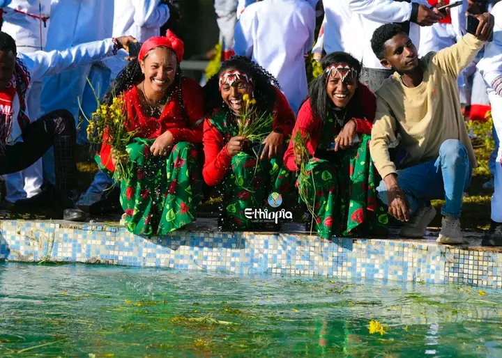
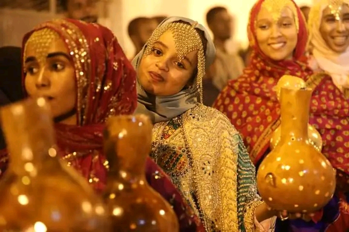
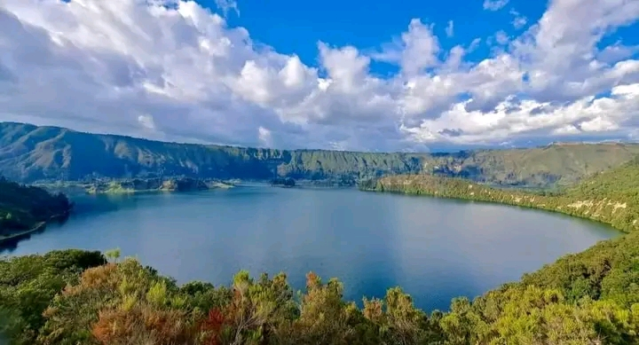
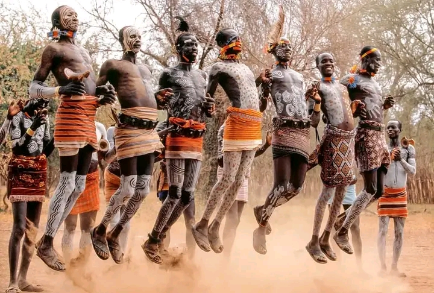
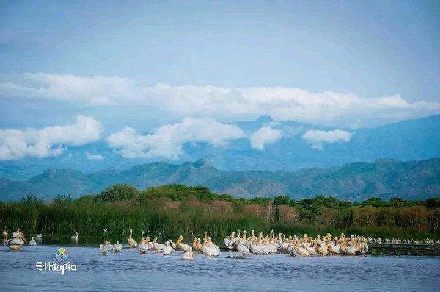
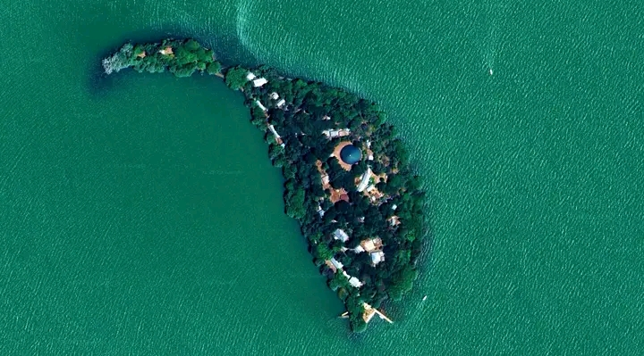
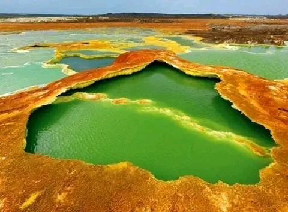

Irrecha
Irreecha is a special event celebrated by the Oromo to express gratitude to Waqqa/God for the transition from the rainy season to the sunny season. This festival showcases the rich cultural and spiritual values of the Oromos, emphasizing concepts like beauty, aesthetics, and unity.
Book NowMeskel
Meskel, also known as “Finding of the True Cross,” is a colorful and vibrant holiday celebrated in Ethiopia. This ancient festival holds deep religious significance for Christians in Ethiopia. It is a unique holiday and it coincides with the end of the raining season and the beginning of the harvest time in Ethiopia..
Book Now

Shewal Eid
Shawwal is the 10th month in the Islamic calendar following the holy month of Ramadan. It is loved worldwide because the first day of the month is celebrated as Eid al-Fitr. Though the 1st day is celebrated as a feast, Muslims keep a 6 day fast just after Eid al-Fitr.
Book NowScience Museum
The museum is built on a seven-hectare space hosting two major building complexes and several interactive exhibits that display local solutions in healthcare, finance, cybersecurity, Geographic Information Systems (GIS), service industries, data analytics, manufacturing, and robotics among others.
Book NowMount Hamebricho
Prepare to be captivated as you venture through the majestic Mount Hamebricho. If you want to see one of nature's true masterpieces in this part of Ethiopia - Mount Hamebricho is here!
Book Now


The aesthetic karo Tribe
Settled and inhabited on the shore of Omo river, the Karo is one of the highly aesthetic groups in the omo valley, Ethiopia! Their styles are often symbolic of important festivities or as a means of attracting the opposite sex. '
Book Now

Lake Chamo
From epic landscapes to crystal waters , and everything in between, you’ll understand why people call Arbaminch and its vicinity an adventurer's dream!
Book Now
Camel Caravan
Joining the camel caravan when the whole road is glowing. With its iconic desert landscape, night skies full of stars and the horizon that goes on forever, a trip in the Danakil desert is a lifetime experience.
Book Now

The Trove of Kibran Gebriel
Kibran Gabriel Monastery, located just a 20-minute boat ride from Bahirdar, is one of Ethiopia's most remarkable religious sites The picturesque monastery is believed to have been founded in the 14th century and is home to a treasure trove of ancient books preserved for centuries. The museum at Kibran Gebriel Monastery is said to hold hundreds of rare manuscripts, some of which date back to the early Christian era.
Book Now

Afar Triangle
Surfing has been associated with oceans, lakes and rivers. Yet, there is a unique kind surfing in the place called the Afar Triangle
Book NowRed Wolf
n the Bale and Semien, the wolf reigns supreme, Endemic to Ethiopia, a majestic dream. Tourists wander to witness its elegant grace, In nature's embrace, a sacred place. Amidst the national parks, the wolf's beauty shines, A symbol of Ethiopia's natural designs. Guardian of Bale and Semien, a grace of mammals rare, Preserving this treasure, our heartfelt care.
Book Now